Configurazione strutture portuali
Il portale delle Smart Guide è uno spazio digitale che raccoglie risorse pratiche e aggiornate in un unico ambiente intuitivo. Strumenti chiari e organizzati per organizzarti e trovare subito ciò che ti serve.
01.
Creazione nuova configurazione porto e strutture portuali
Panoramica sulla creazione e gestione delle configurazioni Porto e delle strutture portuali ad esso associate.
Punto di accesso
La voce di menù
Dalla dashboard, è possibile accedere alle principali sezioni tramite le voci di menu.
Menu a tendina
Cliccando sulla voce "Configurazioni" viene visualizzato un menu a tendina, da cui è possibile accedere a "Porto e relative Strutture Portuali".
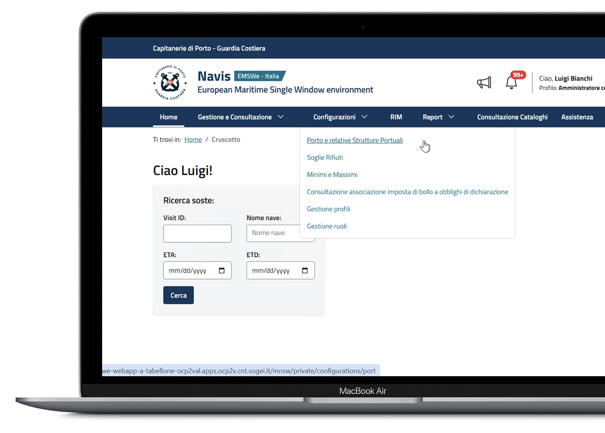
Creazione nuova configurazione Porto
Dopo aver effettuato l'accesso alla pagina "Porto e relative strutture portuali", cliccare sul pulsante "Nuova configurazione" per avviare il flusso di creazione.
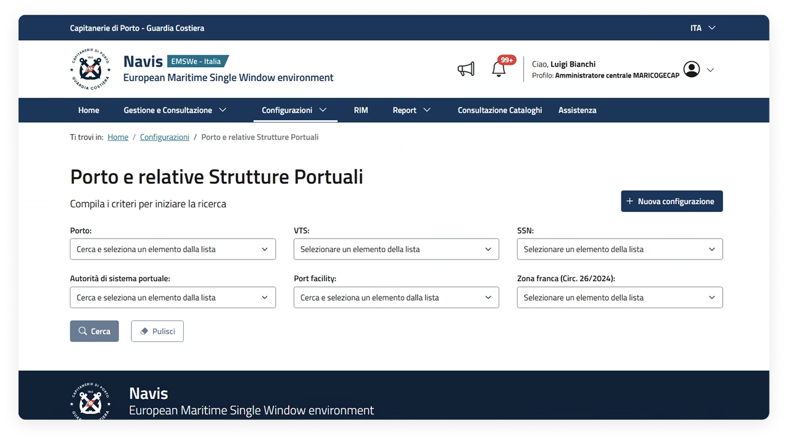
Dopo aver effettuato l'accesso alla pagina "Porto e relative strutture portuali", cliccare sul pulsante "Nuova configurazione" per avviare il flusso di creazione.
Creazione nuova configurazione porto e strutture portuali
Passaggi per creare una nuova configurazione
Per creare una nuova configurazione è necessario che l'utente compili i campi obbligatori.
Inserimento delle informazioni
Per configurare un Porto è necessario selezionare nel relativo campo il porto di interesse. Successivamente alla selezione, il sistema indicherà automaticamente se si tratta di Zona Franca. Proseguire valorizzando "Latitudine"/"Longitudine", "Autorità Portuale" (Sì/No), preimpostato su No. Se si imposta su Sì, viene richiesto di valorizzare obbligatoriamente il campo "Denominazione di Sistema Portuale". Cliccare sul pulsante "Salva" per creare una nuova Configurazione Porto.
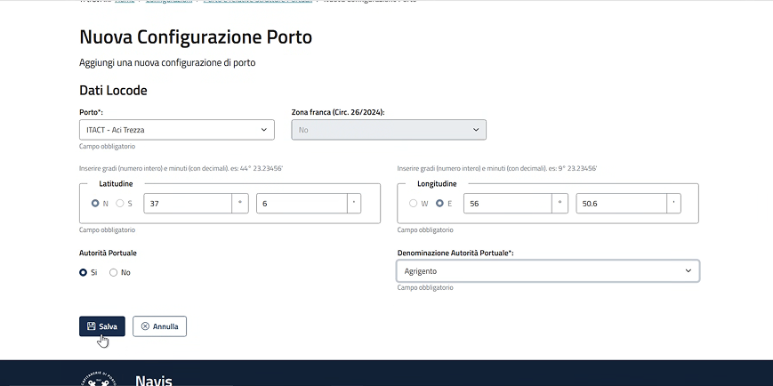
Dettaglio configurazione porto
A seguito del salvataggio il sistema presenta la pagina di dettaglio della configurazione del porto. A seguito di questa operazione, il sistema dà la possibilità di inserire informazioni sulle sezioni Strutture portuali e Dati Organizzazione, cliccando il tasto "Modifica".
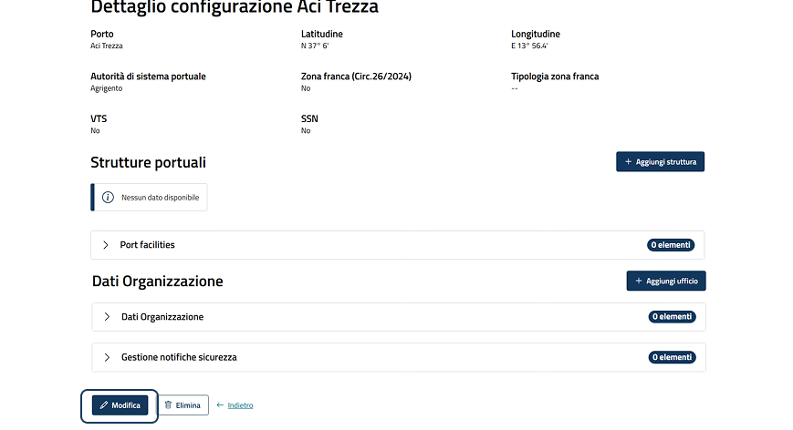
Il sistema presenta i dati relativi a VTS e SSM impostati su "No". Eventuali modifiche su suddetti campi sono gestibili esclusivamente dall'Amministratore Centrale.
Nel caso in cui l'utente sia l'Amministratore CdP Locale, nel campo porto sarà possibile selezionare solo i porti per i quali l'utente risulta responsabile.
Creazione nuova configurazione porto e strutture portuali
Passaggi per aggiungere Dati di organizzazione
Oltre a poter aggiungere nuovi uffici, per ognuno di essi è possibile aggiungere email e associare profili tramite i seguenti passaggi:
Sezione dati di organizzazione
Dopo aver cliccato il pulsante "Modifica", è possibile aggiornare i dati presenti. Nella sezione "Dati di organizzazione" è presente un elenco preimpostato con i seguenti uffici: Ufficio tecnica, Ufficio armamento e spedizioni, Sala operativa, Sicurezza della navigazione. È possibile aggiungere all'elenco ulteriori uffici. Cliccando il pulsante "Aggiungi ufficio" verrà presentata una pagina in cui inserire il nome ufficio e successivamente salvare cliccando il pulsante "Salva".
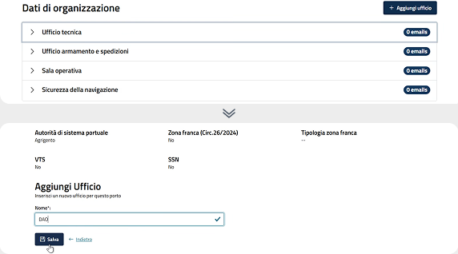
Aggiunta email e possibilità di eliminazione
Per ogni ufficio è possibile inserire l'indirizzo email e cliccare su "Aggiungi contatto". Gli indirizzi email inseriti saranno visibili nell'elenco EMAIL, al cui interno sono presenti le funzionalità per poter eliminarle massivamente (tramite selezione delle checkbox) cliccando il pulsante "Elimina" o singolarmente cliccando il pulsante con l'icona del cestino.
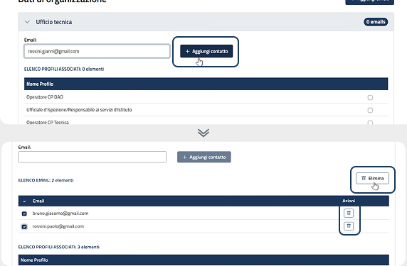
Selezione profili associati
Ad ogni ufficio sarà possibile associare uno o più profili presenti nell'"Elenco Profili associati", selezionandoli tramite checkbox.
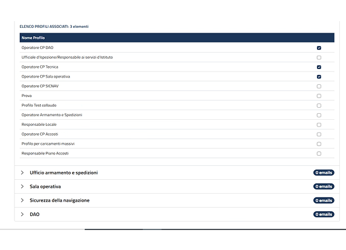
Per ogni ufficio è possibile inserire fino a un massimo di 5 indirizzi Email. Il sistema impedirà l'inserimento di Email già inserite.
Creazione nuova configurazione porto e strutture portuali
Passaggi per configurare notifiche di sicurezza
Selezionare i profili a cui inoltrare le notifiche in caso di ingresso non autorizzato tramite i seguenti passaggi:
Gestione notifiche sicurezza
Selezionare tramite checkbox, uno o più profili a cui inoltrare le notifiche in caso di ingresso in porto di navi non autorizzate.
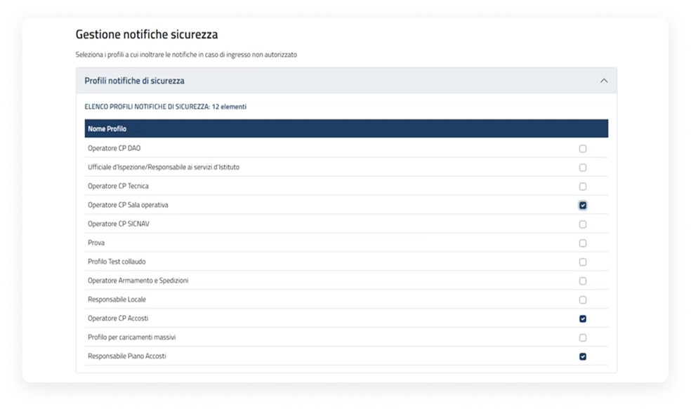
Creazione nuova configurazione porto e strutture portuali
Passaggi per aggiungere una nuova struttura
Configurare una nuova struttura portuale tramite i seguenti passaggi:
Aggiungi struttura
Dopo aver cliccato il pulsante "Modifica", è possibile aggiornare i dati presenti. Per aggiungere una nuova struttura cliccare il pulsante "Aggiungi struttura". Successivamente viene mostrata l'apposita sezione per aggiungere la struttura portuale.
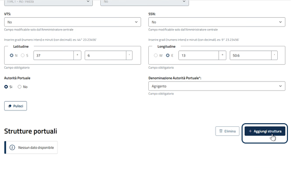
Selezione tipologia struttura e struttura
Dopo aver avviato il processo di aggiunta nuova struttura, selezionare tramite menu a tendina la "Tipologia struttura" che si intende configurare, tra quelle disponibili: Terra o Mare. In relazione alla tipologia di struttura selezionata, nel campo "Struttura" saranno disponibili le strutture contestuali a quanto indicato precedentemente.
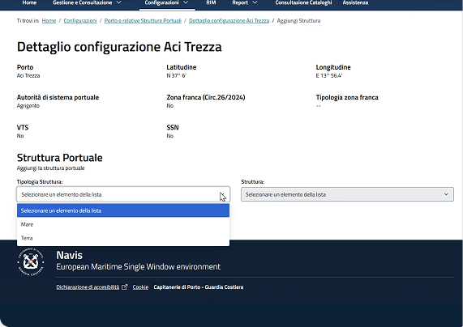
Strutture di Terra e Mare
Per la tipologia struttura "Terra", le strutture disponibili sono: Varco, Terminal, Banchina, Sezione Banchina e Bitta.
Per la tipologia "Mare", le strutture disponibili sono: Imboccatura, Area di Fonda, Punto di Fonda e Boa.
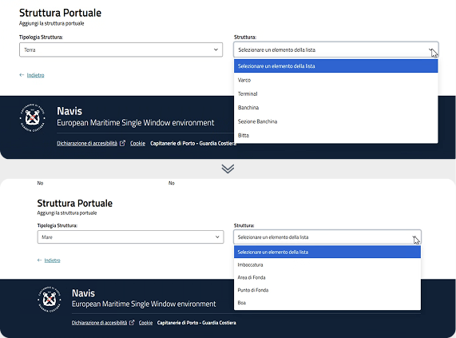
Creazione nuova configurazione strutture di "Terra" — Esempio Terminal
Passaggi per aggiungere una nuova struttura
Configurare una nuova struttura di tipologia "Terra" tramite i seguenti passaggi:
Aggiungi struttura
Dopo aver valorizzato i campi "Tipologia struttura" (Terra) e "Struttura" (Terminal), proseguire con la compilazione dei campi richiesti. Inserire la Denominazione e indicare se il terminal è effettivamente utilizzabile o meno indicando nel campo "Attivo" Sì o No. Successivamente inserire Latitudine e Longitudine.
Il campo Latitudine Nord deve essere compreso tra 34 e 48 gradi e Longitudine Est compreso tra 5 e 21 gradi.
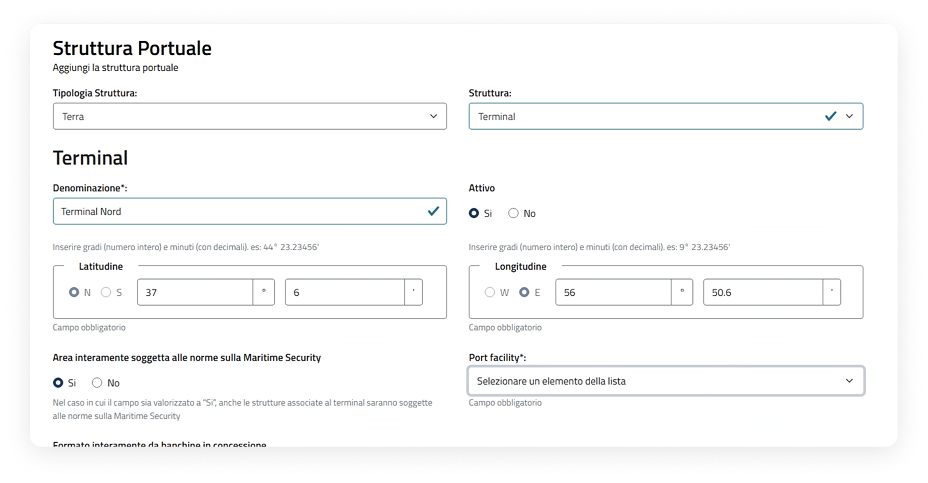
Creazione nuova configurazione strutture di "Terra" — Esempio Terminal
Passaggi per aggiungere una nuova struttura
Inserimento informazioni e salvataggio
- "Area interamente soggetta alle norme sulla Maritime Security" (Sì/No), se impostato su Sì anche le eventuali strutture associate al terminal saranno soggette alle norme sulla Maritime Security;
- "Port Facility" si abilita nel caso in cui il punto precedente è valorizzato a "Sì";
- "Formato interamente da banchine in concessione" (Sì/No), se impostato su Sì indica che anche le eventuali strutture associate al terminal saranno in concessione;
- è possibile aggiungere Note a supporto;
- è possibile indicare se il terminal possiede la disponibilità di spazi per deposito di merci pericolose. Se impostato su "Sì", viene presentata una sezione "Elenco spazi per merci pericolose" dove deve essere indicata classe di pericolosità e capacità massima (m³);
- Infine cliccare su "Salva" per confermare.
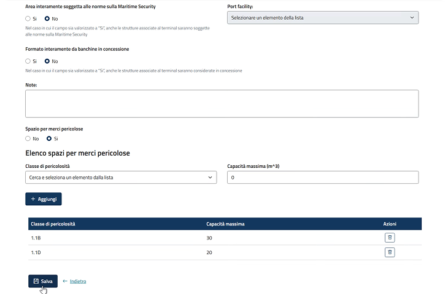
Creazione nuova configurazione porto e strutture portuali
Azioni disponibili dopo aggiunta struttura
Di seguito sono elencate le azioni disponibili sulla struttura portuale della configurazione del porto:
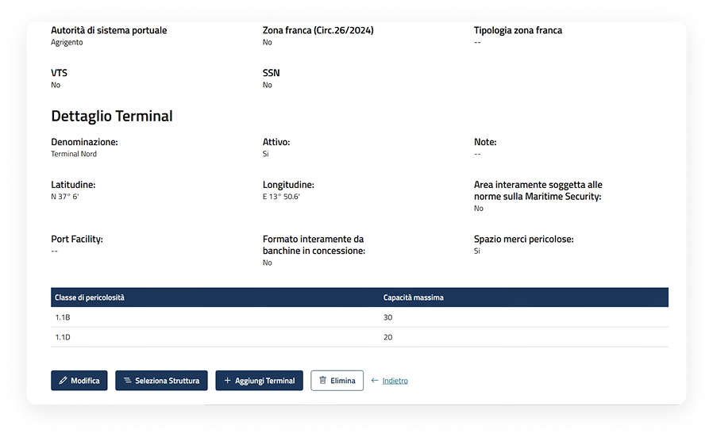
L'utente può tornare alla pagina in cui può selezionare una nuova struttura da configurare.
L'utente può inserire un nuovo terminal associato alla configurazione porto di interesse.
Il pulsante aggiungi è contestualizzato in base alla tipologia di struttura inserita. Esempio: se viene selezionato la tipologia "Bitta", il pulsante sarebbe stato "Aggiungi Bitta".
L'utente può decidere se eliminare o modificare la struttura portuale.
Creazione nuova configurazione strutture di "Terra"
Altri esempi configurazioni portuali — Tipologia TERRA
Di seguito alcuni esempi di configurazione portuali di Tipologia Terra.
Tipologia Varco
Le informazioni da inserire sono: Denominazione, indicare se è attivo o meno tramite pulsante Sì/No, Latitudine e Longitudine.
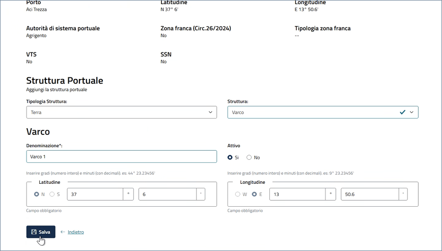
Tipologia Banchina
Le informazioni da inserire sono: indicare se la banchina è associata ad un terminal tramite pulsante Sì/No, se impostato di "Sì" selezionare il terminal, Denominazione, Denominazione per Tabellone arrivi e partenze, indicare se è attivo o meno tramite pulsante Sì/No, Note a supporto, Latitudine e Longitudine, lunghezza e larghezza (se necessario), "Pescaggio (metri)" (obbligatorio).
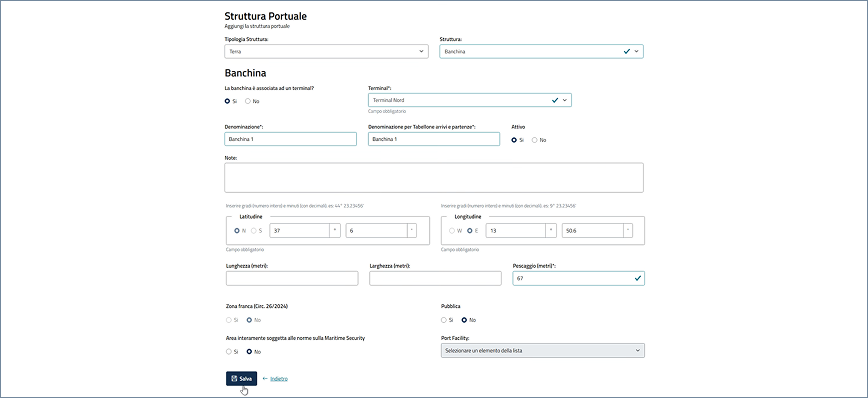
Creazione nuova configurazione strutture di "Terra"
Altri esempi configurazioni portuali — Tipologia TERRA
Di seguito alcuni esempi di configurazione portuali di Tipologia Terra.
Tipologia Sezione Banchina
Le informazioni da inserire sono: Denominazione, Nome banchina, indicare se è attivo o meno tramite pulsante Sì/No, Note a supporto, Latitudine e Longitudine, lunghezza e larghezza (se necessario), "Pescaggio (metri)" (obbligatorio). Il valore "Zona franca" sarà precompilato in base a quanto riportato nella struttura a cui la si vuole associare.
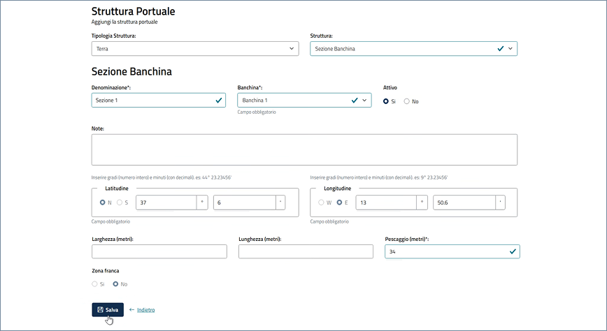
Tipologia Bitta
Le informazioni da inserire sono: il numero di bitte da inserire e cliccare il pulsante "Aggiungi" per aggiungerle e successivamente selezionare la banchina/sezione di banchina nell'elenco sottostante.
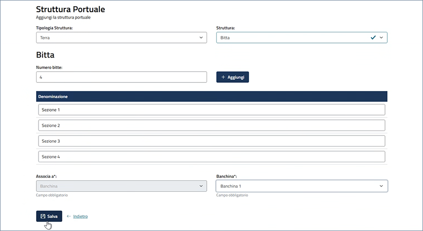
Creazione nuova configurazione strutture di "Mare" — Esempio Boa
Passaggi per aggiungere una nuova struttura
Configurare una nuova struttura di tipologia "Mare" tramite i seguenti passaggi:
Inserimento informazioni e salvataggio
- dopo aver valorizzato i campi "Tipologia struttura" (Mare) e "Struttura" (Boa), proseguire con la compilazione dei campi richiesti. Inserire la Denominazione, Denominazione Tabellone e indicare se il terminal è effettivamente utilizzabile o meno indicando nel campo "Attivo" Sì o No;
- è possibile aggiungere Note a supporto;
- indicare se la struttura portuale deve essere associata al terminal tramite il campo Sì/No. Se viene impostato su "Sì", si attiva la selezione del terminal tramite l'apposito campo;
- indicare se la boa è interamente soggetta alle norme sulla Maritime Security tramite il campo Sì/No. Se viene impostato su "Sì", si attiva la selezione del Port Facility tramite l'apposito campo;
- inserire Latitudine e Longitudine;
- inserire il valore del Pescaggio (metri).
Per salvare la struttura portuale cliccare il pulsante "Salva".
Focus su "azioni post salvataggio struttura portuale" nella sezione precedente.

Creazione nuova configurazione strutture di "Mare"
Altri esempi configurazioni portuali — Tipologia MARE
Di seguito alcuni esempi di configurazione portuali di Tipologia Mare.
Tipologia Imboccatura
Le informazioni da inserire sono: Denominazione, indicare se è attivo o meno tramite pulsante Sì/No, Note a supporto, Latitudine e Longitudine.
Tipologia Area di Fonda
Le informazioni da inserire sono: Denominazione Area, indicare se è attivo o meno tramite pulsante Sì/No, indicare se l'area è interamente soggetta alle norme sulla Maritime Security tramite pulsante Sì/No, se impostato su "Sì", selezionare la Port Facility, Note a supporto. Popolare la sezione "Dati del Poligono": Latitudine e Longitudine e successivamente cliccare il tasto "Aggiungi in elenco" per aggiungerli in "Elenco coordinate".
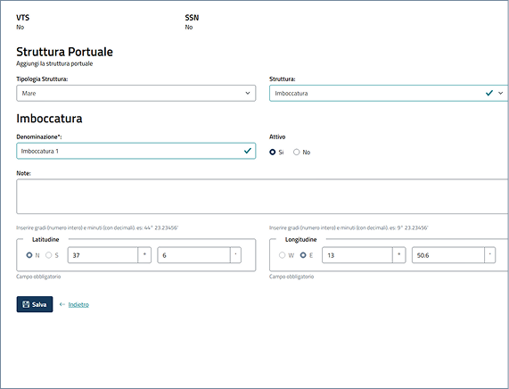
Tipologia Punto di Fonda
Le informazioni da inserire sono: Denominazione, indicare se è attivo o meno tramite pulsante Sì/No, indicare se l'area è interamente soggetta alle norme sulla Maritime Security tramite pulsante Sì/No, se impostato su "Sì", selezionare la Port Facility, Note a supporto, inserire Latitudine e Longitudine e Raggio (m).
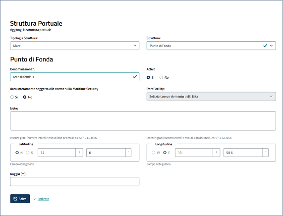
02.
Ricerca e Visualizzazione configurazione porto
Una panoramica sulla ricerca e consultazione delle configurazioni di Porto.
Punto di accesso
La voce di menù
Dalla dashboard, è possibile accedere alle principali sezioni tramite le voci di menu.
Menu a tendina
Cliccando sulla voce "Configurazioni" viene visualizzato un menu a tendina, da cui è possibile accedere a "Porto e relative Strutture Portuali".

Ricerca e Visualizzazione configurazione porto
Funzionalità in pagina
Per ricercare le configurazioni porto, indicare uno dei campi presenti nella sezione filtri. Selezionando tramite menu a tendina un valore del campo "Porto", i campi VTS, SSN, Autorità e Zona Franca saranno prevalorizzati. Selezionando tramite menu a tendina un valore del campo "Port Facility", tutti i restanti campi saranno pre valorizzati. La schermata è suddivisa nelle seguenti tre sezioni:
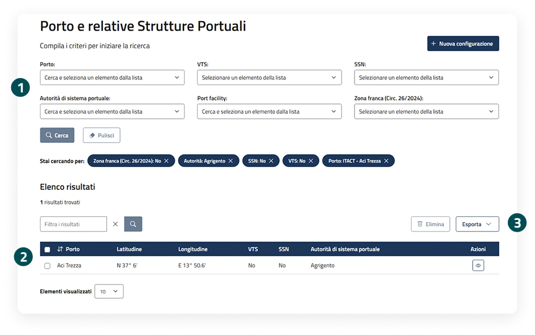
Sezione filtri
La sezione Filtri consente di ricercare le configurazioni porto secondo diversi criteri. È possibile ricercare per: Porto, VTS, SSN, Autorità di sistema portuale, Port Facility e Zona franca. I filtri applicati sono visualizzati e cancellabili.
Nel caso in cui l'utente sia l'Amministratore CdP Locale, nel campo porto sarà possibile selezionare solo i porti per i quali l'utente risulta responsabile.
Azioni sulla tabella dei risultati
È possibile esportare i risultati di ricerca attraverso il pulsante "Esporta" e dopo aver selezionato una o più configurazioni è possibile eliminare tramite il pulsante "Elimina". È possibile filtrare ulteriormente i risultati di ricerca valorizzando il relativo campo.
Visualizzazione configurazioni porto tramite tabella
I risultati della ricerca vengono presentati in una tabella, mostrando le informazioni principali e l'azione di visualizzazione dettaglio tramite icona dell'occhio.
Ricerca e Visualizzazione configurazione porto
Visualizzazione dettaglio Configurazione porto
All'interno della pagina sono consultabili le seguenti informazioni sulla configurazione:
- Dati LOCODE
-
Strutture portuali:
All'interno di questa sezione, saranno visibili tutte le strutture di terra e di mare associate alla configurazione del porto che si sta visualizzando.
-
Dati organizzazione
- Dati organizzazione;
- Gestione notifiche sicurezza.
Possibili azioni sulla Configurazione porto:
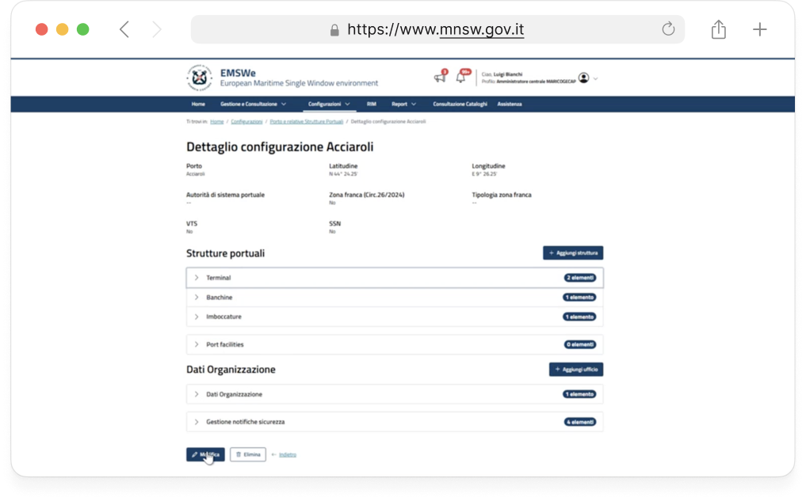
Ricerca e Visualizzazione configurazione porto
Visualizzazione elenco "Strutture Portuali"
All'interno della sezione "Strutture Portuali" viene riportato l'elenco delle strutture portuali create per il porto che si sta visualizzando.
Possibili azioni sulla sezione Strutture Portuali:
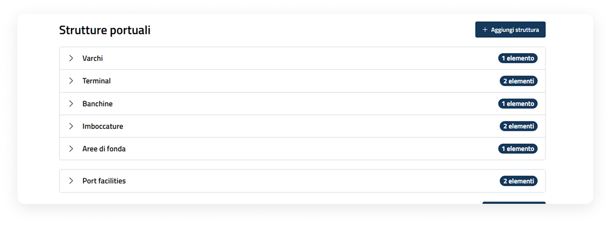
Ricerca e Visualizzazione configurazione porto — Esempio Terminal
Visualizzazione dettaglio "Strutture Portuali"
I dati di dettaglio per ogni tipologia di struttura sono visualizzabili aprendo l'accordion. All'interno dell'accordion sono elencate gerarchicamente le strutture presenti:
- Elenco Terminal: per visualizzare i terminal presenti è necessario espandere l'accordion.
Possibili azioni sul singolo Terminal presente nell'elenco:
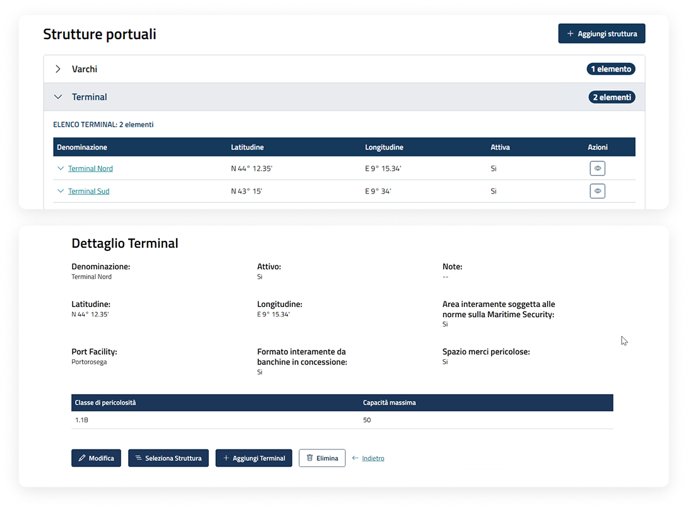
Ricerca e Visualizzazione configurazione porto — Esempio Terminal
Visualizzazione dettaglio "Strutture Portuali"
Per ogni Terminal presente nell'elenco sono visualizzabili gli elenchi delle strutture gerarchiche da esso dipendenti:
- Elenco Boe
-
Elenco Banchine
- Elenco Sezioni di Banchine
- Elenco Bitte
- Elenco Bitte: nel caso in cui alla banchina non siano associate sezioni di banchina.
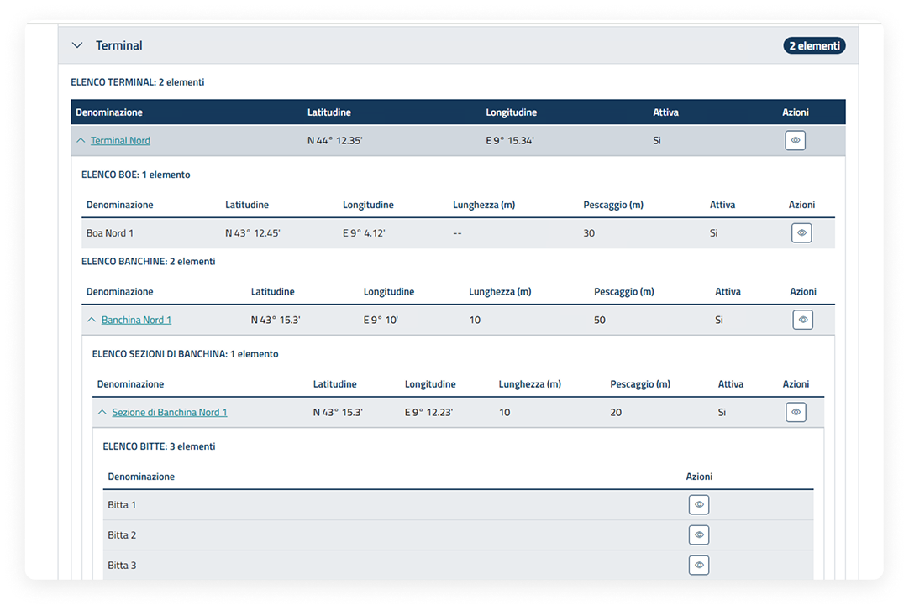
Ricerca e Visualizzazione configurazione porto — Esempio Terminal
Visualizzazione dettaglio "Strutture Portuali"
All'interno dell'accordion Terminal è presente l'elenco delle boe:
- Elenco Boe
Possibili azioni sulla singola Boa nell'elenco:
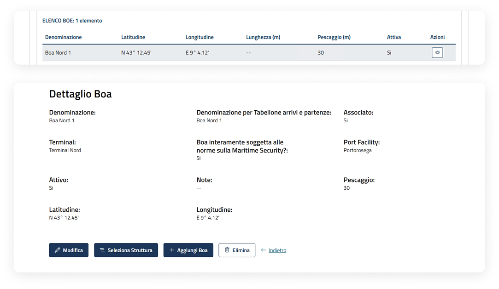
Ricerca e Visualizzazione configurazione porto — Esempio Terminal
Visualizzazione dettaglio "Strutture Portuali"
All'interno dell'accordion Terminal è presente l'elenco Banchine:
- Elenco Banchine: per visualizzare le banchine presenti è necessario espandere l'accordion.
Possibili azioni sulla singola banchina nell'elenco:
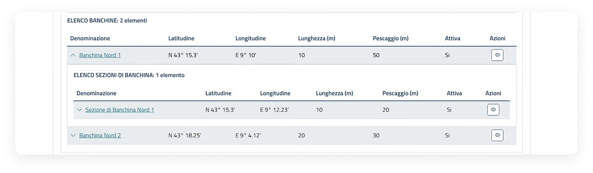
Ricerca e Visualizzazione configurazione porto — Esempio Terminal
Visualizzazione dettaglio "Strutture Portuali"
Per ogni Banchina presente nell'elenco sono visualizzabili gli elenchi delle strutture gerarchiche da essa dipendenti:
- Sezioni di Banchine
-
Elenco bitte:
nel caso in cui alla banchina non siano associate sezioni di banchina.
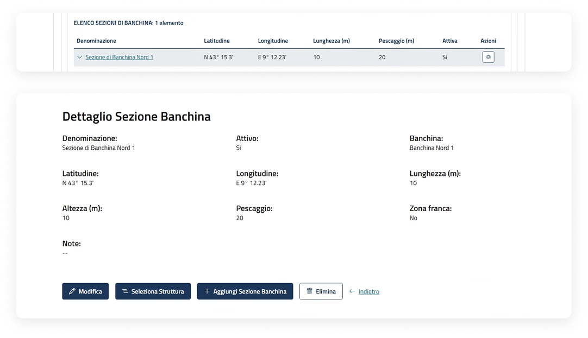
Ricerca e Visualizzazione configurazione porto — Esempio Terminal
Visualizzazione dettaglio "Strutture Portuali"
All'interno dell'accordion Banchina è presente l'elenco delle sezioni di banchina.
- Elenco Sezione di banchina: per visualizzare le sezioni di banchina presenti è necessario espandere l'accordion.
Possibili azioni sulla singola sezione di banchina nell'elenco:
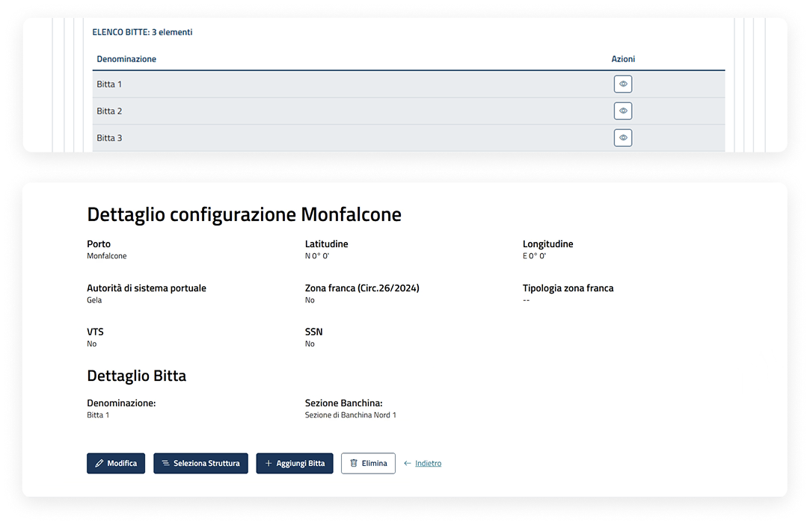
Ricerca e Visualizzazione configurazione porto — Esempio Terminal
Visualizzazione dettaglio "Strutture Portuali"
Per ogni Sezione di Banchina presente nell'elenco sono visualizzabili gli elenchi delle strutture gerarchiche da esso dipendenti:
- Elenco bitte
Possibili azioni sulla singola bitta di banchina nell'elenco:
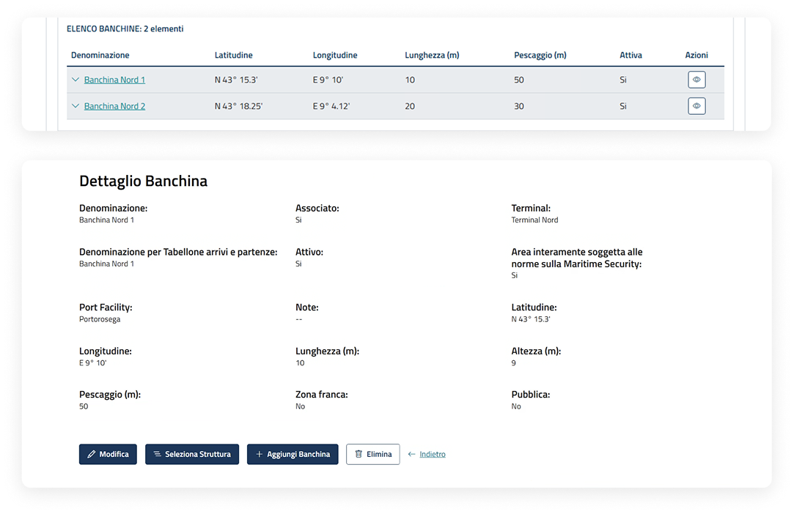
03.
Modifica configurazione porto
Panoramica sulle modalità di modifica delle configurazioni Porto.
Modifica configurazione Porto
Punto di Accesso della modifica di una configurazione Porto
Dettaglio configurazione porto
Nell'elenco risultati della configurazione è possibile accedere al dettaglio in modalità visualizzazione cliccando sull'icona dell'occhio.
Avvio della modifica
All'interno del dettaglio della configurazione porto, per avviare la modifica cliccare il pulsante "Modifica".
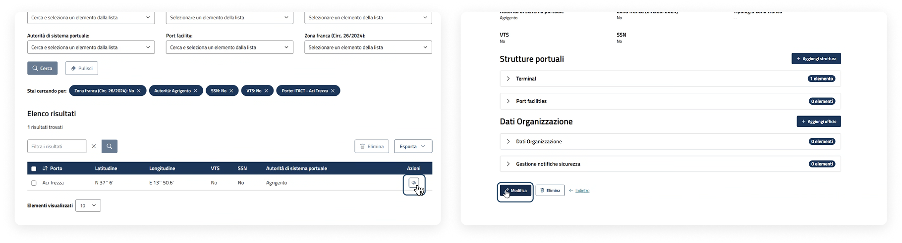
Modifica configurazione Porto
Passaggi per modificare una configurazione
Dopo aver cliccato il pulsante "Modifica", segui tutti i passaggi indicati a sistema e inserisci le informazioni necessarie per completare la modifica della configurazione di porto.
All'interno della pagina di dettaglio in modalità Modifica, il processo di aggiornamento delle informazioni seguirà lo stesso flusso di "Inserimento nuova configurazione".
I dati modificabili sono:
- Dati Locode
- Strutture Portuali
- Dati di Organizzazione
- Gestione notifiche di sicurezza
I campi VTS e SSN sono modificabili solo dall'Amministratore Centrale.
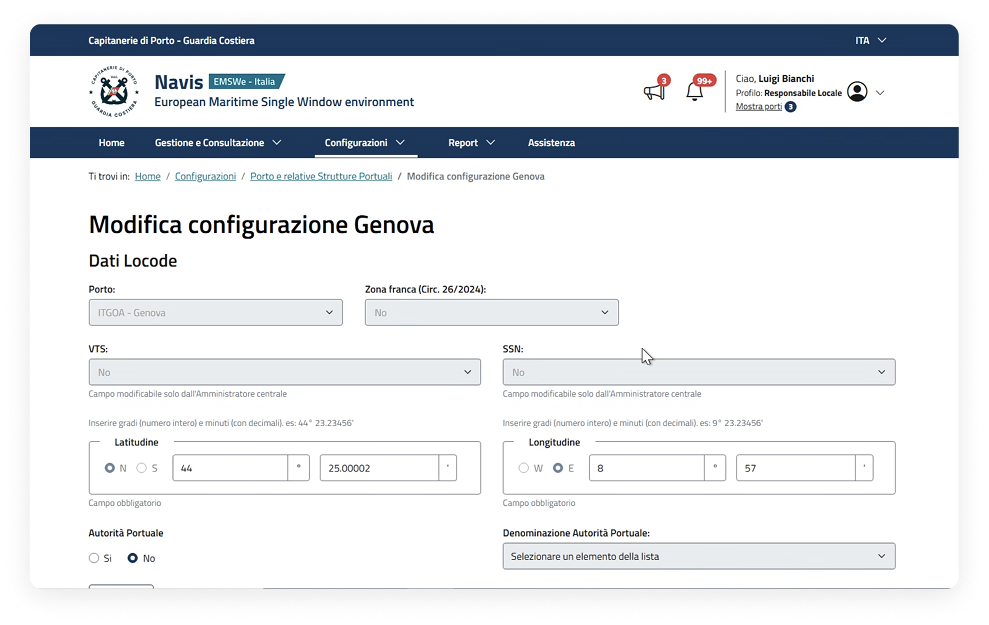
Modifica configurazione Strutture portuali — Esempio Terminal e Strutture associate
Modifica "Strutture Portuali"
I dati di dettaglio per ogni tipologia di struttura sono visualizzabili aprendo l'accordion.
In corrispondenza di ogni Terminal presente nell'elenco, sarà possibile modificare:
- cliccando l'icona della matita;
- oppure all'interno del dettaglio (entrando cliccando l'icona dell'occhio) tramite il pulsante "Modifica".
Possibili azioni sul singolo Terminal presente nell'elenco:
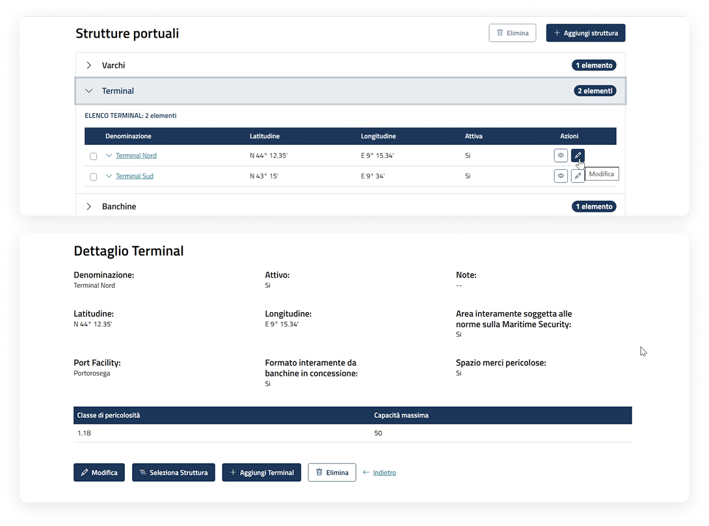
Modifica configurazione Strutture portuali — Esempio Terminal e Strutture associate
Modifica "Strutture Portuali"
All'interno dell'accordion Terminal è presente l'elenco delle boe:
- Elenco Boe
In corrispondenza di ogni Boa presente nell'elenco, sarà possibile modificare:
- cliccando l'icona della matita;
- oppure all'interno del dettaglio tramite il pulsante "Modifica".
Possibili azioni sulla singola Boa nell'elenco:
Modifica configurazione Strutture portuali — Esempio Terminal e Strutture associate
Modifica "Strutture Portuali"
All'interno dell'accordion Terminal è presente l'elenco Banchine:
- Elenco Banchine: per visualizzare le banchine presenti è necessario espandere l'accordion.
In corrispondenza di ogni Banchina presente nell'elenco, sarà possibile modificare:
- cliccando l'icona della matita;
- oppure all'interno del dettaglio tramite il pulsante "Modifica".
Possibili azioni sulla singola banchina nell'elenco:
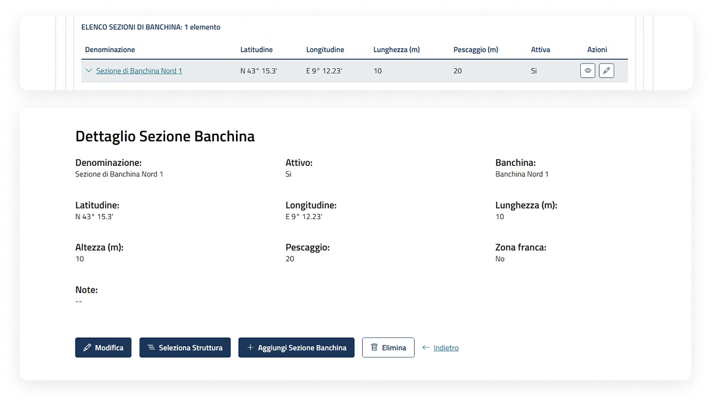
Modifica configurazione Strutture portuali — Esempio Terminal e Strutture associate
Modifica "Strutture Portuali"
All'interno dell'accordion Banchina è presente l'elenco delle sezioni di banchina.
- Elenco Sezione di banchina: per visualizzare le sezioni di banchina presenti è necessario espandere l'accordion.
In corrispondenza di ogni sezione di Banchina presente nell'elenco, sarà possibile modificare:
- cliccando l'icona della matita;
- oppure all'interno del dettaglio tramite il pulsante "Modifica".
Possibili azioni sulla singola Sezione di banchina nell'elenco:
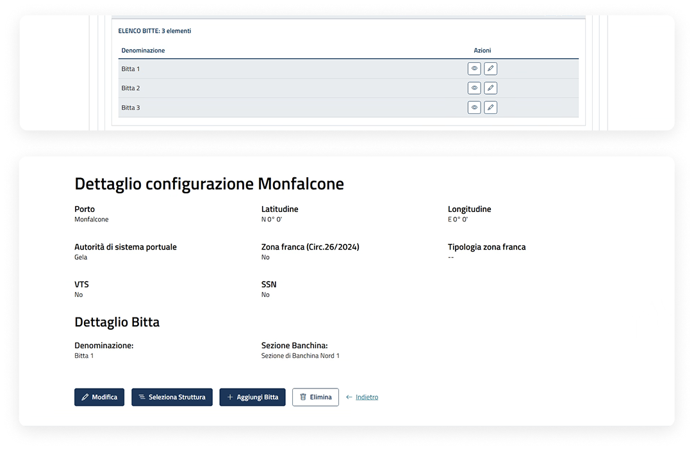
Modifica configurazione Strutture portuali — Esempio Terminal e Strutture associate
Modifica "Strutture Portuali"
Per ogni Sezione di Banchina presente nell'elenco sono visualizzabili gli elenchi delle strutture gerarchiche da esso dipendenti:
- Elenco bitte
In corrispondenza di ogni sezione di Bitta presente nell'elenco, sarà possibile modificare:
- cliccando l'icona della matita;
- oppure all'interno del dettaglio tramite il pulsante "Modifica".
Possibili azioni sulla singola Bitta nell'elenco:
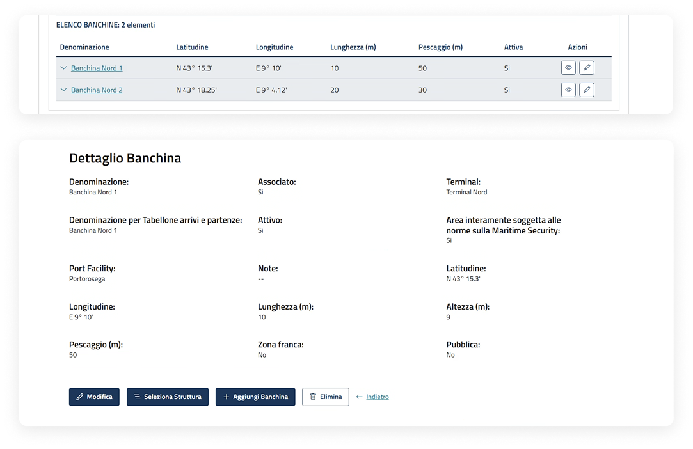
04.
Elimina configurazione porto
Panoramica sulle modalità di eliminazioni delle configurazioni Porto.
Eliminazione configurazione Porto
Punti di accesso per eliminare una configurazione Porto
Attivazione "Elimina" dall'elenco risultati di ricerca
Nell'elenco dei risultati di ricerca delle configurazioni è possibile eliminare una o più configurazioni selezionandole tramite checkbox e successivamente cliccando il pulsante "Elimina".
Attivazione "Elimina" da pagina di dettaglio della configurazione
Nell'elenco dei risultati di ricerca delle soste è possibile accedere al dettaglio in modalità visualizzazione cliccando sull'"icona dell'occhio". All'interno del dettaglio per procedere con l'eliminazione sarà necessario cliccare sul pulsante "Elimina".
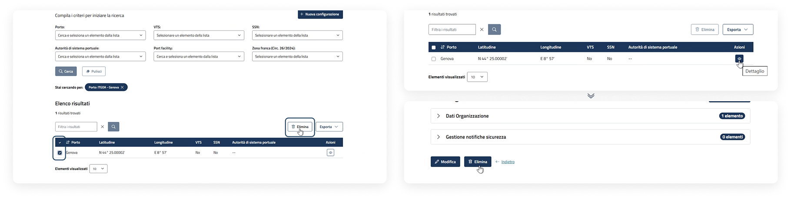
Eliminazione configurazione Porto
Passaggi per eliminare strutture portuali
Eliminare le strutture portuali associate alla configurazione portuale, tramite i seguenti passaggi:
Punto di accesso eliminazione strutture portuali
A seconda della struttura portuale che si vuole cancellare, entrare nel dettaglio cliccando il corrispettivo pulsante con l'"icona dell'occhio".
Eliminazione struttura portuale
Per eliminare la struttura portuale selezionata, all'interno del dettaglio cliccare il pulsante "Elimina".
Eliminando una struttura portuale di livello superiore vengono rimosse automaticamente anche tutte le strutture portuali di livelli inferiori. Esempio: se venisse eliminato un Terminal tutte le strutture ad esso associate saranno eliminate; se venisse eliminata una boa, verranno eliminate le strutture di livello inferiore alla Boa, ma il Terminal non verrebbe eliminato.
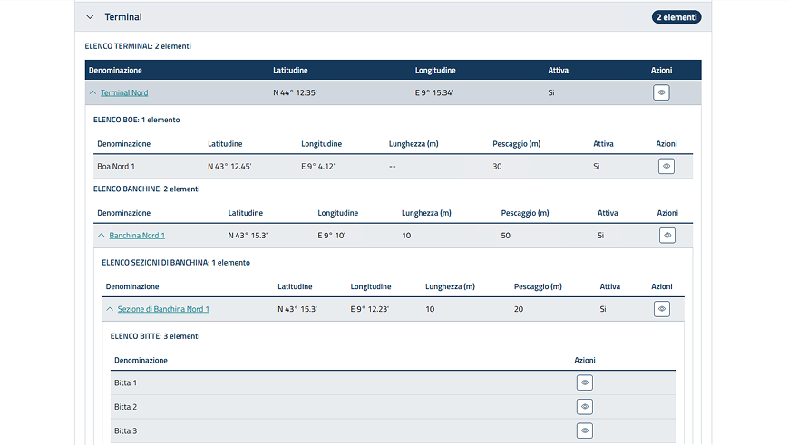